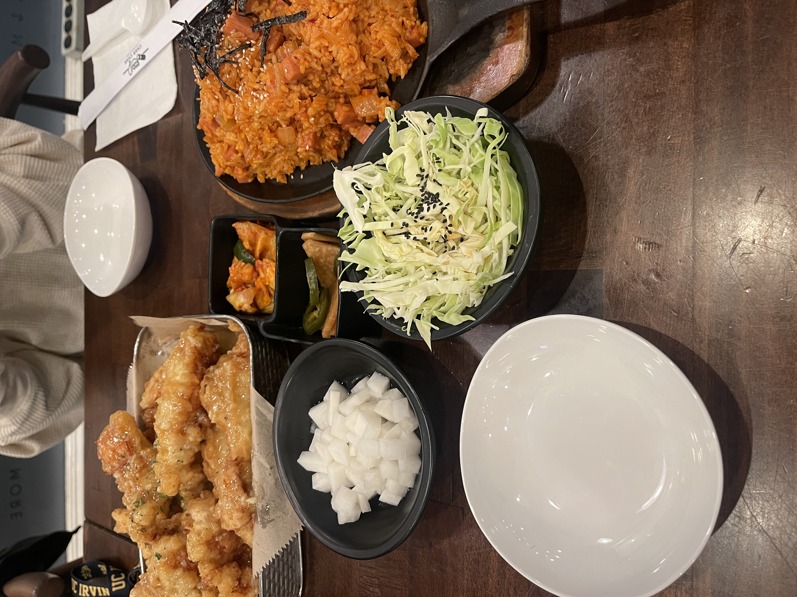
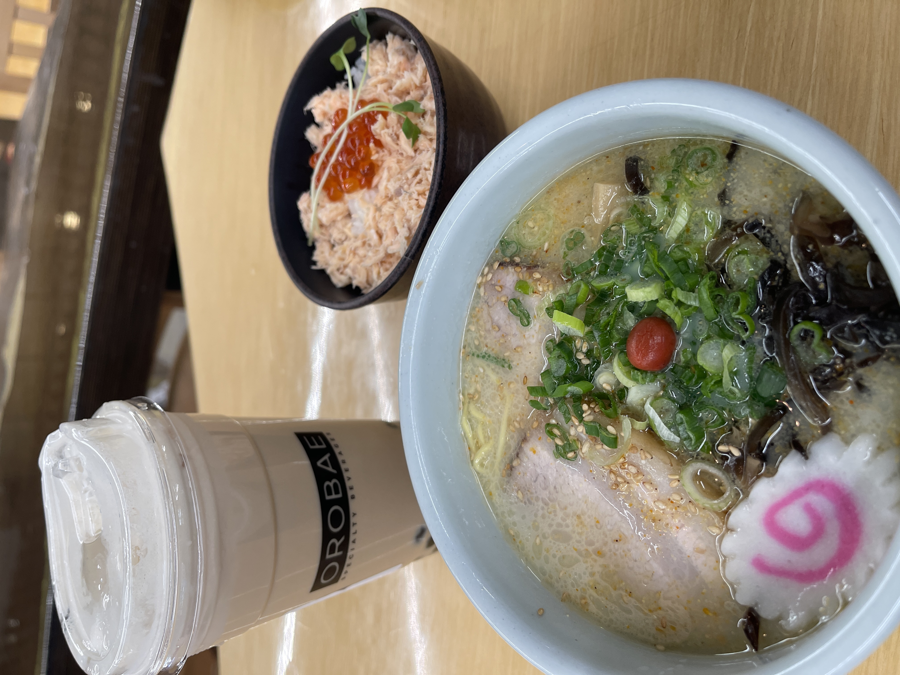

December 2023
Dec 14
"I went to ChanChan located in Irvine CA with a friend. We tried the garlic chicken tenders, and spam and kimchi fried rice. Both entrees were delicious. The meal came with side dishes like, pickled radish, kimchi, another pickled veggie and cabbage. 10/10 would go again!
Dec 24
"Today I went to Orobae in Irvine CA. I got the Metal Buddha with boba and it was sooooo good! The line was long but it was worth the wait. Next to the boba place was Mitsuwa, which is a Japanese supermarket. I've been to a Mitsuwa before but this Mitsuwa had a small food court inside. There were stores selling ramen, rice bowls and other meals. I decided to get a ramen combo meal, which came with a medium sized ramen and a small bowl of rice with smoked salmon and salmon roe. Everything was really falvorful and super yummy. Boba 10/10 would get again if it weren't for the long af line. Food 8/10; really good food but portions were a little small for the price.
January 2024
Jan 3
 "
"
Today I went to my go to ramen place back home in San Gabriel CA. The place is called Kopan and today we decided to try their sushi. We got the King Alaskan Roll. The fish was fresh and the eel sauce and spicy mayo really pull all the flavors together. Love love love Kopan. Their ramen is always really good and the portions are great. I would also get their sushi again 10/10 recommend :)